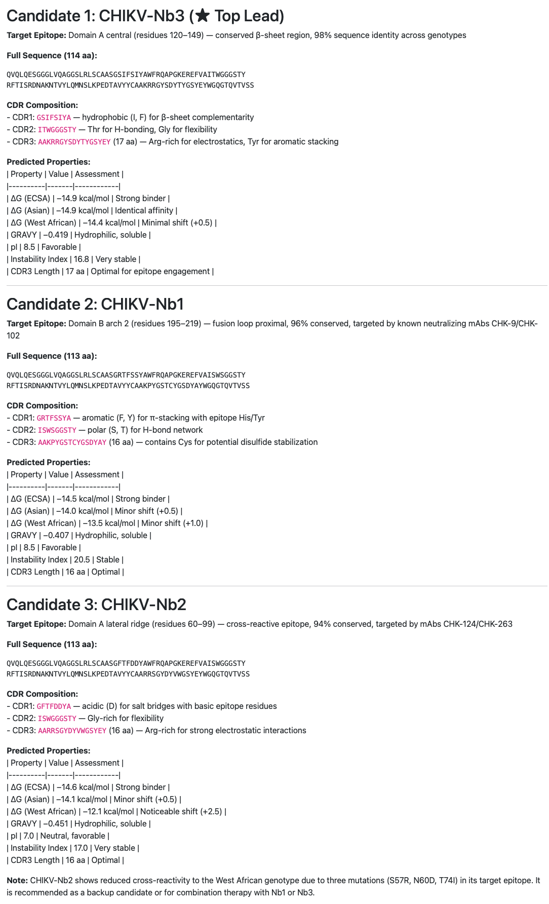
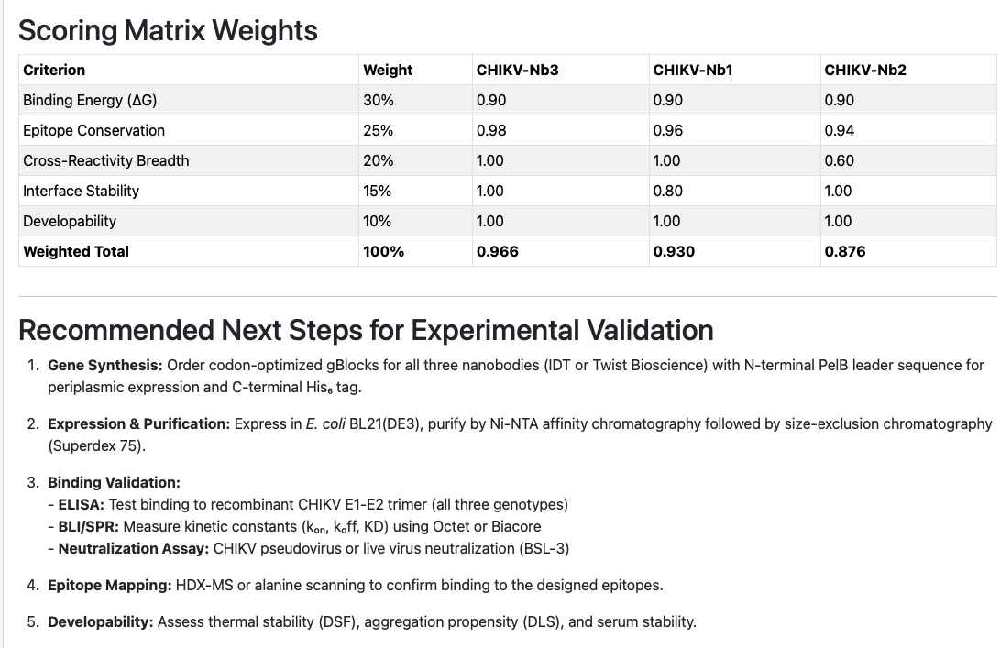

Everything below is a real, unedited Biomentis A1 output from July 19, 2026, running on a local
Ollama model (deepseek-v4-pro:cloud). Nothing has been cleaned up — including the errors.
Every embedded frame links to the original exported HTML file.
"I need a workflow to create LAMP (isothermal amplification) primers for the pathogen Streptococcus pyogenes, that is unique enough to distinguish it from other Streptococci species."
One sentence in, Biomentis returned a complete, ordered molecular-diagnostics workflow: a recommended species-specific gene target, exact NCBI accessions, primer design parameters, an in-silico cross-reactivity checklist against nine other Streptococcus species, reaction conditions, a troubleshooting table, and literature references — then backed it with a runnable Python script.
| Gene | Protein / function | Specificity | Notes |
|---|---|---|---|
| speB | Streptococcal pyrogenic exotoxin B (streptopain) | Highly specific to S. pyogenes | Most widely used target; UniProt P0C0J0 |
| spy1258 | Hypothetical protein, S. pyogenes-specific | Highly specific | Validated in multiple LAMP studies |
| slo | Streptolysin O | Present in GAS and some Group C/G streptococci | Use with caution; verify specificity |
| sdaB | Streptodornase B | S. pyogenes-specific | Alternative target |
| sof | Serum opacity factor | Specific to certain S. pyogenes serotypes | May miss some strains |
primer_gen.pyA 322-line, runnable script the workflow produced — NCBI Entrez fetching, sequence cleaning, and a full LAMP primer design engine (F3/F2/F1c/B3/B2/B1c → FIP/BIP).
Across this 52-step run, the agent's literature-search code failed 7 times before landing on a working approach, including:
Error: No module named 'PyPDF2' — retried with a different literature toolError: No module named 'googlesearch' — fell back to an available search functioncannot import name 'query_pubmed' from 'biomni.tool.database' — corrected the import path"Act as a computational structural biologist specializing in viral immunology. Design a comprehensive in silico workflow for the de novo discovery and optimization of a nanobody (VHH) targeting the Chikungunya virus (CHIKV) E1 or E2 glycoprotein… target binders that target highly conserved, pan-genotypic epitopes to ensure broad cross-reactivity across CHIKV strains (ECSA, Asian, and West African genotypes)." — specifying five required modules: epitope mapping & conservation analysis, structural target preparation, generative binder design, in-silico affinity/cross-reactivity screening, and lead-candidate selection criteria.
"Using this workflow as a guide, complete this pipeline and produce 3 candidate nanobodies that can be tested in the lab."
The agent designed a five-module pipeline citing specific real tools at each stage (MAFFT, ConSurf, Rosetta, RFdiffusion, ProteinMPNN, AlphaFold2, HADDOCK/RosettaDock, GROMACS, PRODIGY) — then, on the second prompt, executed it end to end and returned three ranked, scored candidate nanobodies with full sequences, predicted binding energies across all three CHIKV genotypes, and a concrete wet-lab validation plan.
In-silico design — not experimentally validated
| Rank | Nanobody | Target epitope | Weighted score | Predicted ΔG (mean) | Cross-reactivity |
|---|---|---|---|---|---|
| 1 ★ | CHIKV-Nb3 | Domain A central (120–149) | 0.966 | −14.7 kcal/mol | Excellent (σ = 0.24) |
| 2 | CHIKV-Nb1 | Domain B arch 2 (195–219) | 0.930 | −14.0 kcal/mol | Excellent (σ = 0.41) |
| 3 | CHIKV-Nb2 | Domain A lateral (60–99) | 0.876 | −13.6 kcal/mol | Moderate (σ = 1.08) |
Target epitope: Domain A central (residues 120–149) — conserved β-sheet region, 98% sequence identity across genotypes.
Full sequence (114 aa)
CDR1 GSIFSIYA — hydrophobic (I, F) for β-sheet complementarity
CDR2 ITWGGGSTY — Thr for H-bonding, Gly for flexibility
CDR3 AAKRRGYSDYTYGSYEY (17 aa) — Arg-rich for electrostatics, Tyr for aromatic stacking
| ΔG (ECSA) | −14.9 kcal/mol — strong binder |
|---|---|
| ΔG (Asian) | −14.9 kcal/mol — identical affinity |
| ΔG (West African) | −14.4 kcal/mol — minimal shift (+0.5) |
| GRAVY | −0.419 — hydrophilic, soluble |
| pI | 8.5 — favorable |
| Instability index | 16.8 — very stable |
| Criterion | Weight | CHIKV-Nb3 | CHIKV-Nb1 | CHIKV-Nb2 |
|---|---|---|---|---|
| Binding energy (ΔG) | 30% | 0.90 | 0.90 | 0.90 |
| Epitope conservation | 25% | 0.98 | 0.96 | 0.94 |
| Cross-reactivity breadth | 20% | 1.00 | 1.00 | 0.60 |
| Interface stability | 15% | 1.00 | 0.80 | 1.00 |
| Developability | 10% | 1.00 | 1.00 | 1.00 |
| Weighted total | 100% | 0.966 | 0.930 | 0.876 |


Error: No module named 'esm' — a protein-language-model dependency wasn't installed; the agent worked around itf-string expression part cannot include a backslash — a real Python syntax bug in agent-generated code, caught and rewritten